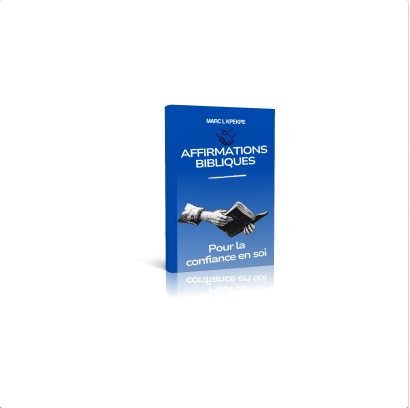

Lis pour grandir. Apprends à croire en toi.

Estime de Soi ou apprendre a s'aimer
Un livre simple pour te libérer du regard des autres.
üìñ T√©l√©charger

Affirmations Bibliques pour la Confiance
31 jours pour transformer tes pensées avec la Parole.
üìñ T√©l√©charger